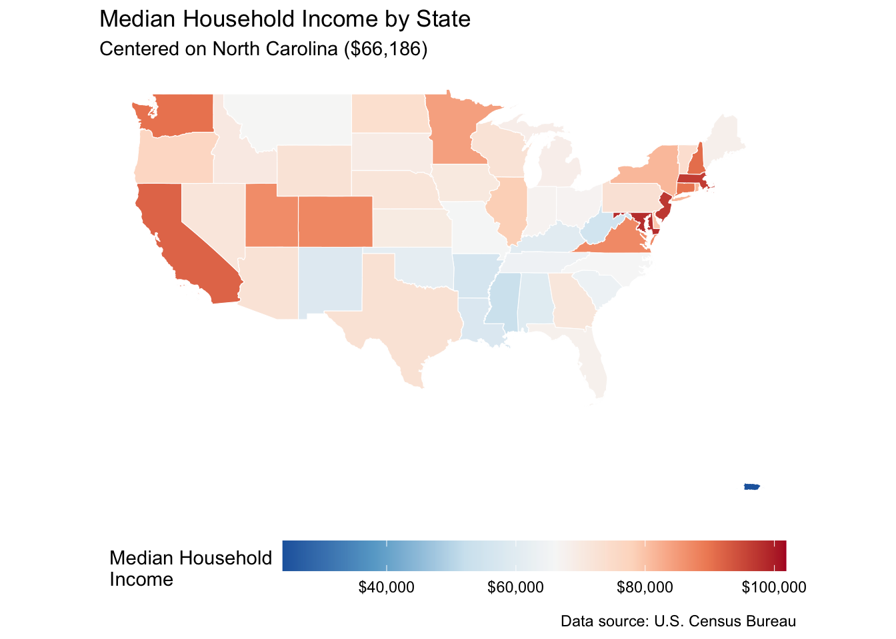
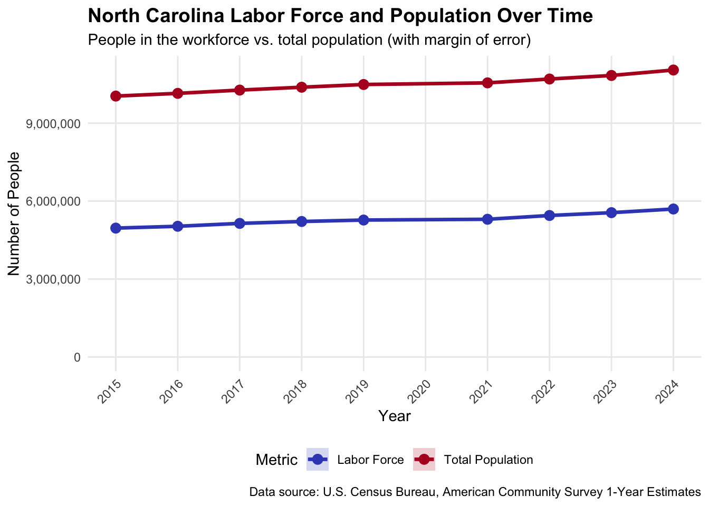

Structural Comparison of North Carolina and Peer States
Structural Comparison of North Carolina and Peer States
1. Introduction
This chapter identifies U.S. states that exhibit structural similarity to North Carolina (NC) along key dimensions of economic development and labor market composition. The purpose is to define a defensible comparison set for subsequent analysis of labor market development. Rather than selecting comparator states ad hoc, the approach formalizes similarity using a multivariate distance metric applied to harmonized state-level indicators.
The analysis is exploratory and descriptive in nature. It does not aim to establish causal relationships but to construct a transparent and replicable framework for identifying observationally comparable states based on structural characteristics.
2. Data and Variable Construction
State-level data are drawn from the American Community Survey (ACS) 1-year estimates for the period 2015-2025. The ACS provides harmonized, nationally comparable data on income, education, labor force status, and demographic composition.
Indicators are grouped into four conceptual domains.
2.1 Economic Structure
- Median household income
- Poverty rate
- Gini coefficient of income inequality
The poverty rate is constructed as:
\[ \text{Poverty Rate}_{it} = \frac{\text{Population Below Poverty}_{it}}{\text{Total Population for Poverty Determination}_{it}} \]
2.2 Educational Composition (Population 25+)
- Share of population aged 25+ with a Bachelor’s degree or higher
\[ \text{BA+ Share}_{it} = \frac{\text{BA}_{it} + \text{MA}_{it} + \text{Professional}_{it} + \text{PhD}_{it}}{\text{Population 25+}_{it}} \]
2.3 Labor Market Structure
- Unemployment rate
- Labor force participation rate (LFPR)
- Employment-to-population ratio
\[ \text{Unemployment Rate}_{it} = \frac{\text{Unemployed}_{it}}{\text{Labor Force}_{it}} \]
\[ \text{LFPR}_{it} = \frac{\text{Labor Force}_{it}}{\text{Population 16+}_{it}} \]
\[ \text{Employment-Population Ratio}_{it} = \frac{\text{Employed}_{it}}{\text{Population 16+}_{it}} \]
2.4 Demographic Structure
- Median age
- Share Black
- Share Hispanic
- Share foreign-born
- Total population
Shares are constructed relative to their appropriate denominators (e.g., race total, Hispanic origin total, place-of-birth total).
All variables are treated as state-level structural characteristics observed annually.
2.5 ACS Variable Mapping
| Category | Variable Code | Description |
|---|---|---|
| Economics | B19013_001 | Median household income in the past 12 months |
| Economics | B17001_001 | Poverty status in the past 12 months (total) |
| Economics | B17001_002 | Income in the past 12 months below poverty |
| Economics | B19083_001 | Gini index of income inequality |
| Education (25+) | B15003_001 | Total population 25+ years |
| Education (25+) | B15003_021 | Bachelor's degree |
| Education (25+) | B15003_022 | Master's degree |
| Education (25+) | B15003_023 | Professional school degree |
| Education (25+) | B15003_025 | Doctorate degree |
| Labor Force | B23025_001 | Population 16+ years |
| Labor Force | B23025_003 | Civilian labor force |
| Labor Force | B23025_004 | Employed |
| Labor Force | B23025_005 | Unemployed |
| Demographics | B01002_001 | Median age |
| Demographics | B01003_001 | Total population |
| Demographics | B02001_001 | Total race population |
| Demographics | B02001_003 | Black or African American alone |
| Demographics | B03003_001 | Total Hispanic origin population |
| Demographics | B03003_003 | Hispanic or Latino |
| Demographics | B05002_001 | Total place of birth population |
| Demographics | B05002_013 | Foreign born |
2.6 Exploratory Visualization (Income)
Before constructing multivariate similarity, the figures below provide a simple example using median household income.
The plot below shows the median income of the lower 48 with a diverging scale centered on North Carolina.

3. Conceptual Framework
Let:
- \(i = 1, \dots, N\) index states
- \(t = 2015, \dots, 2025\) index years
- \(k = 1, \dots, K\) index features
Define the feature vector:
\[ \mathbf{x}_{it} = (x_{i1t}, \dots, x_{iKt})' \]
where \(\mathbf{x}_{it} \in \mathbb{R}^K\) contains the structural indicators for state \(i\) in year \(t\).
For each year \(t\), we construct a cross-sectional feature matrix:
\[ X_t = \begin{bmatrix} \mathbf{x}_{1t}' \\ \mathbf{x}_{2t}' \\ \vdots \\ \mathbf{x}_{Nt}' \end{bmatrix} \]
The objective is to measure the proximity of each state \(i\) to North Carolina in this multivariate feature space.
4. Standardization
Because features are measured in heterogeneous units (dollars, rates, shares, counts), direct comparison would lead to scale dominance by high-variance variables. Therefore, each feature is standardized cross-sectionally within year:
\[ z_{ikt} = \frac{x_{ikt} - \mu_{kt}}{\sigma_{kt}} \]
where:
- \(\mu_{kt}\) is the mean of feature \(k\) across states in year \(t\)
- \(\sigma_{kt}\) is the corresponding standard deviation
This transformation yields standardized feature vectors:
\[ \mathbf{z}_{it} = (z_{i1t}, \dots, z_{iKt})' \]
Standardization ensures that all variables contribute equally in terms of variance to the similarity metric.
5. Distance-Based Similarity
Let \(NC\) denote North Carolina. For each year \(t\), define the Euclidean distance between state \(i\) and North Carolina as:
\[ d_{it} = \sqrt{\sum_{k=1}^{K} \left(z_{ikt} - z_{NC,kt}\right)^2} \]
States are ranked in ascending order of \(d_{it}\). The \(n\) states with the smallest distances form the comparison set for year \(t\).
This procedure is implemented separately for:
- Economic indicators only
- Education indicators only
- Labor market indicators only
- Demographic indicators only
- The full set of indicators
This modular approach allows identification of states that are similar along specific structural dimensions as well as overall similarity.
5.1 Implementation
6. Temporal Consistency
To assess structural stability of similarity, define:
\[ C_i = \sum_t \mathbb{1}(\text{rank}_{it} \le 5) \]
where \(\mathbb{1}(\cdot)\) is the indicator function and \(C_i\) counts the number of years in which state \(i\) appears among the five closest states to North Carolina.
Additionally define:
\[ \bar{d}_i = \frac{1}{T_i} \sum_t d_{it} \qquad \bar{r}_i = \frac{1}{T_i} \sum_t \text{rank}_{it} \]
where \(T_i\) is the number of years state \(i\) appears in the comparison set.
States with high \(C_i\), low average distance \(\bar{d}_i\), and low average rank \(\bar{r}_i\) are interpreted as structurally robust comparators.
| year | rank | state | distance |
|---|---|---|---|
| All Indicators | |||
| 2024 | 1 | Tennessee | 1.347 |
| 2024 | 2 | Oregon | 1.373 |
| 2024 | 3 | Missouri | 1.487 |
| 2024 | 4 | Michigan | 1.621 |
| 2024 | 5 | Arizona | 1.901 |
| 2024 | 6 | Washington | 1.954 |
| 2024 | 7 | Pennsylvania | 1.960 |
| 2024 | 8 | Wisconsin | 1.993 |
| 2024 | 9 | Illinois | 2.218 |
| 2024 | 10 | Indiana | 2.258 |
| Demographics | |||
| 2024 | 1 | Illinois | 0.648 |
| 2024 | 2 | Colorado | 1.164 |
| 2024 | 3 | Pennsylvania | 1.170 |
| 2024 | 4 | Arizona | 1.338 |
| 2024 | 5 | Minnesota | 1.369 |
| 2024 | 6 | Tennessee | 1.527 |
| 2024 | 7 | New Jersey | 1.530 |
| 2024 | 8 | Connecticut | 1.530 |
| 2024 | 9 | Virginia | 1.550 |
| 2024 | 10 | Wisconsin | 1.594 |
| Economics | |||
| 2024 | 1 | Florida | 0.291 |
| 2024 | 2 | Tennessee | 0.299 |
| 2024 | 3 | Arizona | 0.587 |
| 2024 | 4 | Colorado | 0.700 |
| 2024 | 5 | Rhode Island | 0.720 |
| 2024 | 6 | Oregon | 0.754 |
| 2024 | 7 | South Carolina | 0.776 |
| 2024 | 8 | Minnesota | 0.791 |
| 2024 | 9 | Washington | 0.794 |
| 2024 | 10 | Michigan | 0.801 |
| Education | |||
| 2024 | 1 | Illinois | 0.015 |
| 2024 | 2 | Hawaii | 0.057 |
| 2024 | 3 | South Dakota | 0.067 |
| 2024 | 4 | Maine | 0.080 |
| 2024 | 5 | Nebraska | 0.120 |
| 2024 | 6 | North Dakota | 0.143 |
| 2024 | 7 | Oregon | 0.166 |
| 2024 | 8 | Wisconsin | 0.180 |
| 2024 | 9 | Rhode Island | 0.181 |
| 2024 | 10 | New York | 0.260 |
| Labor Market | |||
| 2024 | 1 | Tennessee | 0.297 |
| 2024 | 2 | Idaho | 0.346 |
| 2024 | 3 | Pennsylvania | 0.389 |
| 2024 | 4 | Ohio | 0.471 |
| 2024 | 5 | Michigan | 0.487 |
| 2024 | 6 | Arizona | 0.564 |
| 2024 | 7 | Virginia | 0.640 |
| 2024 | 8 | Indiana | 0.717 |
| 2024 | 9 | Oregon | 0.734 |
| 2024 | 10 | Georgia | 0.785 |
| state | years_in_top5 | avg_rank | avg_distance |
|---|---|---|---|
| Tennessee | 9 | 1.78 | 1.388 |
| Oregon | 8 | 1.62 | 1.325 |
| Missouri | 8 | 3.50 | 1.498 |
| Michigan | 5 | 3.20 | 1.402 |
| Washington | 5 | 4.60 | 1.763 |
| Indiana | 4 | 3.50 | 1.608 |
| Pennsylvania | 2 | 3.50 | 1.620 |
| Arizona | 2 | 5.00 | 1.819 |
| Wyoming | 1 | 3.00 | 1.665 |
| Wisconsin | 1 | 5.00 | 1.845 |
# # Plot showing top states' distance from NC over time
# all_vars_over_time |>
# filter(rank <= 5) |>
# ggplot(aes(x = year, y = distance, color = state, group = state)) +
# geom_line(linewidth = 1) +
# geom_point(size = 2) +
# labs(
# title = "Distance from North Carolina Over Time",
# subtitle = "Based on all economic, education, labor, and demographic variables",
# x = "Year",
# y = "Standardized Distance",
# color = "State"
# ) +
# theme_minimal()7. Interpretation
The methodology identifies states that are observationally proximate to North Carolina in a multidimensional structural space. These states share similar income distributions, educational attainment profiles, labor force structures, and demographic compositions.
Importantly, similarity is evaluated annually. This permits structural alignment to evolve over time and avoids reliance on a single cross-sectional benchmark.
The resulting comparison set provides a principled empirical basis for subsequent analysis of labor market trajectories, policy differences, or growth dynamics.
8. Methodological Considerations
8.1 Equal Weighting
The Euclidean metric implicitly assigns equal weight to all standardized features:
\[ w_k = 1 \quad \forall k \]
This assumption may not reflect substantive priorities. If labor market structure is of primary interest, weights could be introduced:
\[ d_{it}^{(w)} = \sqrt{\sum_{k=1}^{K} w_k \left(z_{ikt} - z_{NC,kt}\right)^2} \]
where \(w_k\) reflects theoretical importance.
8.2 Covariance Structure
Euclidean distance ignores correlation between features. Highly correlated variables may effectively double-count structural dimensions.
An alternative is the Mahalanobis distance:
\[ d_{it}^{(M)} = \sqrt{(\mathbf{z}_{it} - \mathbf{z}_{NC,t})' \Sigma_t^{-1} (\mathbf{z}_{it} - \mathbf{z}_{NC,t})} \]
where \(\Sigma_t\) is the covariance matrix of standardized features in year \(t\). This accounts for cross-feature correlation.
8.3 Cross-Sectional Standardization
Standardizing within year removes national trends. While appropriate for identifying contemporaneous similarity, it suppresses information about relative divergence over time. An alternative would be pooled standardization across years or baseline-year anchoring.
8.4 Causal Interpretation
The method identifies structural comparators but does not guarantee comparability in policy regimes, institutional settings, or dynamic trajectories. It is therefore suitable as a selection mechanism for further analysis, not as a causal design in itself.
9. Conclusion
This chapter develops a formal and replicable framework for identifying states structurally comparable to North Carolina. Using ACS data, multivariate standardization, and distance-based similarity metrics, the procedure defines comparison sets across economic, educational, labor market, and demographic dimensions.
The approach provides a transparent foundation for selecting comparator states in subsequent analyses of labor market development, while remaining flexible to alternative weighting schemes, covariance adjustments, or dynamic extensions in later stages of the research design.
Appendix: North Carolina Workforce Context
